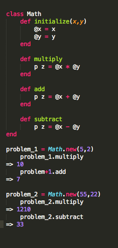
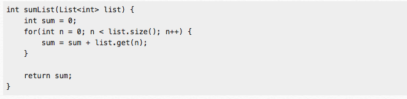

Ruby is mostly considered to be an object-oriented programming language, although it has been debated that it still untilizes some practices used in Functional programming. Since I am still a newby in programming and don't really have enough background to make a educated arguement either way, I thought I would give you guys an idea about what each programming type is all about.
Object-Oriented Programming: OOP utilizes methods and classes in its codes in order to create objects that have various properties while the object is in its given state. The output of a program can vary based on how it is processed through the methods. Simple Example of OOP code:  As you can see, depending on whether you are utilizing the add method or subtract method, your output will vary.
Functional Programming: Functional Programming can best be described as a concept which models mathmatical functions. FP has no objects or 'states', its output has no variation or side effects. Example: I don't have any experience using functional programming, so I stole an example from a website. 
I hope this was helpful :)